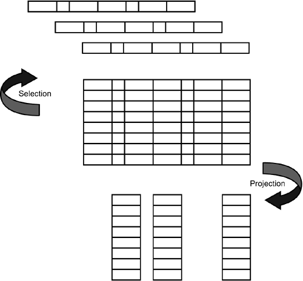
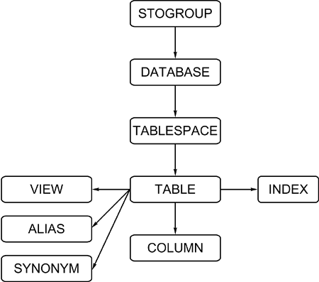
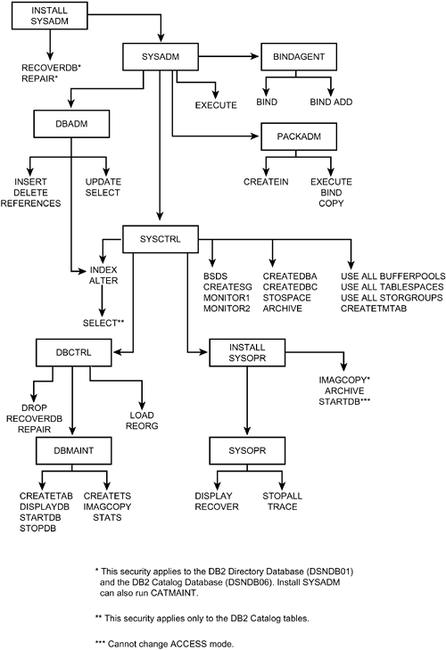

|
|
< Day Day Up > |
|
SQL Tools of the TradeSQL, as a "relational" data sublanguage, must support certain basic functions. These functions, or tools of the trade, implement the basic features of set-theory functions. You must have a basic understanding of the capabilities of SQL before you can explore the deeper issues of efficiency, development environments, performance, and tuning. The basic functions of SQL are described in the following sections. Use these sections as a refresher course; they are not meant to teach SQL syntax or provide in-depth coverage of its use. Selection and ProjectionThe selection operation retrieves a specified subset of rows from a DB2 table. You use predicates in a WHERE clause to specify the search criteria. The SQL implementation for selection is shown in the following example: SELECT * FROM DSN8810.PROJ WHERE DEPTNO = 'D01'; To retrieve all rows from the PROJ table, simply eliminate the WHERE clause from the statement. The projection operation retrieves a specified subset of columns from a given DB2 table. A DB2 query can provide a list of column names to limit the columns that are retrieved. Projection retrieves all of the rows but only the specified columns. The following statement illustrates the SQL implementation for projection: SELECT DEPTNO, PROJNO, PROJNAME FROM DSN8810.PROJ; Simply, the selection operation determines which rows are retrieved, and the projection operation determines which columns are retrieved. This is clearly depicted in Figure 1.4. Figure 1.4. Selection and projection. The SQL SELECT statement is used to implement both the selection and projection operations. In most cases, queries combine selection and projection to retrieve data. The following SQL statement combines the selection and projection operations of the preceding two examples: SELECT DEPTNO, PROJNO, PROJNAME FROM DSN8810.PROJ WHERE DEPTNO = 'D01'; Joins and SubqueriesThe capability to query data from multiple tables using a single SQL statement is one of the nicer features of DB2. The more tables involved in a SELECT statement, however, the more complex the SQL. Complex SQL statements sometimes cause confusion. Therefore, a basic understanding of the multiple table capabilities of SQL is essential for all users. Joining TablesThe capability of DB2 to combine data from multiple tables is called joining. A standard join, also referred to as an inner join, matches the data from two or more tables, based on the values of one or more columns in each table. All matches are combined, creating a resulting row that is the concatenation of the columns from each table where the specified columns match. The most common method of joining DB2 tables requires SQL SELECT statements having the following:
For example, to query employees and their department names, the EMP table is joined to the DEPT table as follows:
SELECT EMPNO, LASTNAME, DEPTNO, DEPTNAME
FROM DSN8810.EMP,
DSN8810.DEPT
WHERE WORKDEPT = DEPTNO;
This method of coding joins, however, has confused many novice SQL programmers. No join verb need be coded explicitly in the SQL SELECT statement to implement table joining. A join can be specified by the presence of more than one table in the FROM clause of the SELECT statement. It is sometimes difficult to grasp the concept of joining tables without a specific JOIN keyword being used in the SQL join statement. DB2 V4 introduced the JOIN keyword and an alternate method of coding joins. The following two join statements are equivalent to the previous join statement: SELECT EMPNO, LASTNAME, DEPTNO, DEPTNAME FROM DSN8810.EMP JOIN DSN8810.DEPT ON WORKDEPT = DEPTNO; or: SELECT EMPNO, LASTNAME, DEPTNO, DEPTNAME FROM DSN8810.EMP INNER JOIN DSN8810.DEPT ON WORKDEPT = DEPTNO; Note that the comma-delimited list of tables is replaced with the keyword JOIN or INNER JOIN. The INNER keyword is used to differentiate a standard, or inner, join from an outer join. Outer joins will be discussed in a moment. The INNER keyword is implicit and will be assumed if not explicitly coded. Likewise, note that when you use the JOIN keyword you must use ON (instead of WHERE) to specify the join condition. Additional local predicates can be applied with an additional WHERE clause if so desired. NOTE Although both types of joins are supported by DB2, consider adopting an SQL coding standard using the explicit [INNER] JOIN keyword. Using the JOIN keyword makes it more difficult to forget to code the join columns (because it requires the special ON clause). Furthermore, when using the JOIN keyword it is easier for novices to learn and effectively code join statements. When coding joins, remember to keep in mind that SQL is a set-level language. If the value of the data in the columns being matched is not unique, multiple matches might be found for each row in each table. Even if the data is unique, many rows could still match if the operation specified in the join criteria is not an equality operation. For example
SELECT EMPNO, LASTNAME
FROM DSN8810.EMP INNER JOIN
DSN8810.DEPT
ON WORKDEPT > DEPTNO;
(Admittedly, this example is contrived.) Many rows will match, and could result in the join returning more rows than either table originally contained. You do not have to join tables based only on equal values. Matching can be achieved with any of the following operations:
Take care to ensure that the proper join criteria are specified for the columns you are joining. Base the predicates of a join on columns drawn from the same logical domain. For example, consider the following join:
SELECT EMPNO, LASTNAME, DEPTNO, DEPTNAME
FROM DSN8810.EMP JOIN
DSN8810.DEPT
ON WORKDEPT = DEPTNO;
This is a good example of a join. The employee table is joined to the department table using a logical department code that exists physically as a column in both tables (WORKDEPT in the employee table and DEPTNO in the department table). Both these columns are pooled from the same domain: the set of valid departments for the organization. Remember, there are two ways of coding join statements and this join statement could alternately be coded as follows:
SELECT EMPNO, LASTNAME, DEPTNO, DEPTNAME
FROM DSN8810.EMP,
DSN8810.DEPT
WHERE WORKDEPT = DEPTNO;
You must consider the possible size of the results table before deciding to join tables. Generally, the more data that must be accessed to accomplish the join, the less efficient the join will be. Note that this does not necessarily mean that joining larger tables will result in poorer performance than joining smaller tables. It all depends on the formulation of the query, the design of the database, the amount of data that must be accessed, the organization of the data, and the amount of data that will be returned as the result set for the query. Guidelines for the efficient coding of SQL joins are presented in Chapter 2, "Data Manipulation Guidelines." The order of magnitude for the join is determined by the number of tables specified in the FROM clause; or by counting the number of JOIN keywords and adding 1. For example, the following join is a three-table join because three tables—EMP, DEPT, and PROJ—are specified:
SELECT PROJNO, EMPNO, LASTNAME, DEPTNAME
FROM DSN8810.EMP E,
DSN8810.DEPT D,
DSN8810.PROJ P
WHERE EMPNO = RESPEMP
AND D.DEPTNO = E.WORKDEPT;
This example of an equijoin involves three tables. DB2 matches rows in the EMP table with rows in the PROJ table where the two rows match on employee number. Likewise, rows in the EMP table are matched with rows in the DEPT table where the department number is the same. This example produces a results table listing each project number along with information about the employee responsible for the project including his or her department name. The following is an equivalent formulation of the prior statement using the [INNER] JOIN keyword (and it should perform similarly):
SELECT PROJNO, EMPNO, LASTNAME, DEPTNAME
FROM (DSN8810.EMP E JOIN
DSN8810.DEPT D
ON D.DEPTNO = E.WORKDEPT) JOIN
DSN8810.PROJ P
ON EMPNO = RESPEMP;
The join criteria are specified in the ON clause immediately following the table join specification. Contrast this with the looser, comma-delimited formulation. It is much easier to determine which predicate applies to which join specification when the INNER JOIN syntax is used. To determine the magnitude of the join in this example, count the JOIN keywords and add 1. There are two JOIN keywords specified, so the magnitude of the join is 2+1, or 3. Tables can be joined to themselves also. Consider the following query:
SELECT A.DEPTNO, A.DEPTNAME, A.ADMRDEPT, B.DEPTNAME
FROM DSN8810.DEPT A,
DSN8810.DEPT B
WHERE A.ADMRDEPT = B.DEPTNO;
This join returns a listing of all department numbers and names, along with the associated department number and name to which the department reports. Self-referencing lists such as this one would not be possible without the capability to join a table to itself. Joins are possible because all data relationships in DB2 are defined by values in columns instead of by other methods (such as pointers). DB2 can check for matches based solely on the data in the columns specified in the predicates of the WHERE clause in the SQL join statement. When coding a join, you must take extra care to code a proper matching predicate for each table being joined. Failure to do so can result in a Cartesian product, the subject of the next section. Cartesian ProductsA Cartesian product is the result of a join that does not specify matching columns. Consider the following query:
SELECT *
FROM DSN8810.DEPT,
DSN8810.EMP;
This query lacks a WHERE clause. To satisfy the query DB2 combines every row from the DEPT table with every row in the EMP table. An example of the output from this statement follows: DEPTNO DEPTNAME MGRNO ADMRDEPT EMPNO FIRSTNAME MIDINIT LASTNAME WORKDEPT ... A00 SPIFFY CO. 000010 A00 000010 CHRISTINE I HAAS A00 ... A00 SPIFFY CO. 000010 A00 000020 MICHAEL L THOMPSON B01 ... A00 SPIFFY CO. 000010 A00 000030 SALLY A KWAN C01 ... A00 SPIFFY CO. 000010 A00 000040 JOHN B GEYER E01 ... A00 SPIFFY CO. 000010 A00 000340 JASON R GOUNOT E21 ... B01 PLANNING 000020 A00 000010 CHRISTINE I HAAS A00 ... B01 PLANNING 000020 A00 000020 MICHAEL L THOMPSON B01 ... B01 PLANNING 000020 A00 000030 SALLY A KWAN C01 ... B01 PLANNING 000020 A00 000040 JOHN B GEYER E01 ... E21 SOFTWARE SUP. 000100 E01 000340 JASON R GOUNOT E21 ... All the columns of the DEPT table and all the columns of the EMP table are included in the Cartesian product. For brevity, the example output does not show all of the columns of the EMP table. The output shows the first four rows of the output followed by a break and then additional rows and breaks. A break indicates data that is missing but irrelevant for this discussion. By analyzing this output, you can see some basic concepts about the Cartesian product. For example, the first row looks okay. Christine I. Haas works in department A00, and the information for department A00 is reported along with her employee information. This is a coincidence. Notice the other rows of the output. In each instance, the DEPTNO does not match the WORKDEPT because we did not specify this in the join statement. When a table with 1,000 rows is joined as a Cartesian product with a table having 100 rows, the result is 1,000 * 100 rows, or 100,000 rows. These 100,000 rows, however, contain no more information than the original two tables because no criteria were specified for combining the table. In addition to containing no new information, the result of a Cartesian product is more difficult to understand because the information is now jumbled, whereas before it existed in two separate tables. In general, avoid Cartesian products. NOTE Although Cartesian products should be avoided in practice, there are certain circumstances where DB2 can use Cartesian products "behind the scenes" to practical benefit. These circumstances occur when the DB2 optimizer determines that better performance can be achieved using a Cartesian product. You, as a user, should not attempt to create and execute a Cartesian product because the performance is usually atrocious and no additional information is gained by running such a query. The DB2 optimizer may determine that a Cartesian product should be performed for a portion of a join. Such a situation usually happens in data warehousing queries where a star join is used to build a Cartesian product for dimension tables. (For details on star joins consult Chapter 45, "Data Warehousing with DB2.") The result of the dimension table Cartesian join is then joined with the fact table. Because the fact table is usually many times larger than the dimension table, processing the fact table only once can significantly improve performance by reducing the size of intermediate results sets. SubqueriesSQL provides the capability to nest SELECT statements. When one or more SELECT statements are nested in another SELECT statement, the query is referred to as a subquery. (Many SQL and DB2 users refer to subqueries as nested SELECTs.) A subquery enables a user to base the search criteria of one SELECT statement on the results of another SELECT statement. CAUTION Do not confuse a subquery with a subselect. The term subquery is used when one query is embedded in the WHERE clause of another query. The term subselect is used by IBM to define a particular component of a fullselect statement. Although you can formulate subqueries in different fashions, they typically are expressed as one SELECT statement connected to another in one of four ways:
The following SELECT statement is an example of a subquery:
SELECT DEPTNAME
FROM DSN8810.DEPT
WHERE DEPTNO IN
(SELECT WORKDEPT
FROM DSN8810.EMP
WHERE SALARY > 50000);
DB2 processes this SQL statement by first evaluating the nested SELECT statement to retrieve all WORKDEPTs where the SALARY is over $50,000. It then matches rows in the DEPT table that correspond to the WORKDEPT values retrieved by the nested SELECT. This match produces a results table that lists the name of all departments where any employee earns more than $50,000. Of course, if more than one employee earns over $50,000 per department, the same DEPTNAME may be listed multiple times in the results set. To eliminate duplicates, the DISTINCT clause must be used. For example:
SELECT DISTINCT DEPTNAME
FROM DSN8810.DEPT
WHERE DEPTNO IN
(SELECT WORKDEPT
FROM DSN8810.EMP
WHERE SALARY > 50000);
The preceding statements use the IN operator to connect SELECT statements. The following example shows an alternative way of nesting SELECT statements, by means of an equality predicate:
SELECT EMPNO, LASTNAME
FROM DSN8810.EMP
WHERE WORKDEPT =
(SELECT DEPTNO
FROM DSN8810.DEPT
WHERE DEPTNAME = 'PLANNING');
DB2 processes this SQL statement by retrieving the proper DEPTNO with the nested SELECT statement that is coded to search for the PLANNING department. It then matches rows in the EMP table that correspond to the DEPTNO of the PLANNING department. This match produces a results table that lists all employees in the PLANNING department. Of course, it also assumes that there is only one PLANNING department. If there were more, the SQL statement would fail because the nested SELECT statement can only return a single row when the = predicate is used. This type of failure can be avoided by using IN instead of the = predicate. The capability to express retrieval criteria on nested SELECT statements gives the user of SQL additional flexibility for querying multiple tables. A specialized form of subquery, called a correlated subquery, provides a further level of flexibility by permitting the nested SELECT statement to refer back to columns in previous SELECT statements. As an example:
SELECT A.WORKDEPT, A.EMPNO, A.FIRSTNME, A.MIDINIT,
A.LASTNAME, A.SALARY
FROM DSN8810.EMP A
WHERE A.SALARY >
(SELECT AVG(B.SALARY)
FROM DSN8810.EMP B
WHERE A.WORKDEPT = B.WORKDEPT)
ORDER BY A.WORKDEPT, A.EMPNO;
Look closely at this correlated subquery. It differs from a normal subquery in that the nested SELECT statement refers back to the table in the first SELECT statement. The preceding query returns information for all employees who earn a SALARY greater than the average salary for that employee's given department. This is accomplished by the correlation of the WORKDEPT column in the nested SELECT statement to the WORKDEPT column in the first SELECT statement. The following example illustrates an alternative form of correlated subquery using the EXISTS predicate:
SELECT A.EMPNO, A.LASTNAME, A.FIRSTNME
FROM DSN8810.EMP A
WHERE EXISTS
(SELECT '1'
FROM DSN8810.DEPT B
WHERE B.DEPTNO = A.WORKDEPT
AND B.DEPTNAME = 'OPERATIONS');
This query returns the names of all employees who work in the OPERATIONS department. A non-correlated subquery is processed in bottom-to-top fashion. The bottom-most query is executed and, based on the results, the top-most query is resolved. A correlated subquery works in a top-bottom-top fashion. The top-most query is analyzed, and based on the analysis, the bottom-most query is initiated. The bottom-most query, however, relies on the top-most query to evaluate its predicate. After processing for the first instance of the top-most query, therefore, DB2 must return to that query for another value and repeat the process until the results table is complete. Both forms of subqueries enable you to base the qualifications of one retrieval on the results of another. Joins Versus SubqueriesA subquery can be converted to an equivalent join. The concept behind both types of queries is to retrieve data by accessing multiple tables based on search criteria matching data in the tables. Consider the following two SELECT statements. The first is a subquery:
SELECT EMPNO, LASTNAME
FROM DSN8810.EMP
WHERE WORKDEPT IN
(SELECT DEPTNO
FROM DSN8810.DEPT
WHERE DEPTNAME = 'PLANNING');
The second SELECT statement is a join:
SELECT EMPNO, LASTNAME
FROM DSN8810.EMP,
DSN8810.DEPT
WHERE WORKDEPT = DEPTNO
AND DEPTNAME = 'PLANNING';
Both of these queries return the employee numbers and last names of all employees who work in the PLANNING department. Let's first discuss the subquery formulation of this request. The list of valid DEPTNOs is retrieved from the DEPT table for the DEPTNAME of 'PLANNING'. This DEPTNO list then is compared against the WORKDEPT column of the EMP table. Employees with a WORKDEPT that matches any DEPTNO are retrieved. The join operates in a similar manner. In fact, the DB2 optimizer can be intelligent enough to transform a subquery into its corresponding join format before optimization; optimization is covered in depth in Chapter 21, "The Optimizer." The decision to use a subquery, a correlated subquery, or a join usually is based on performance. In early releases of DB2, the performance of logically equivalent queries could vary greatly depending upon whether they were coded as a subquery or a join. With the performance changes made to DB2 in recent years, worrying about the performance of joins and subqueries is usually not worth the effort. As a general rule of thumb, I suggest using joins over the other two types of multi-table data retrieval. This provides a consistent base from which to operate. By promoting joins over subqueries, you can meet the needs of most users and diminish confusion. If you need to squeeze the most performance from a system, however, try rewriting multi-table data retrieval SQL SELECT statements as both a join and a subquery. Test the performance of each SQL formulation and use the one that performs best. UnionThe union operation combines two sets of rows into a single result set composed of all the rows in both of the two original sets. The two original sets must be union-compatible. For union compatibility
In purest set-theory form, the union of two sets contains no duplicates, but DB2 provides the option of retaining or eliminating duplicates. The UNION verb eliminates duplicates; UNION ALL retains them. An example SQL statement using UNION follows: SELECT CREATOR, NAME, 'TABLE ' FROM SYSIBM.SYSTABLES WHERE TYPE = 'T' UNION SELECT CREATOR, NAME, 'VIEW ' FROM SYSIBM.SYSTABLES WHERE TYPE = 'V' UNION SELECT CREATOR, NAME, 'ALIAS ' FROM SYSIBM.SYSTABLES WHERE TYPE = 'A' UNION SELECT CREATOR, NAME, 'SYNONYM' FROM SYSIBM.SYSSYNONYMS; This SQL UNION retrieves all the tables, views, aliases, and synonyms in the DB2 Catalog. Notice that each SELECT statement tied together using the UNION verb has the same number of columns, and each column has the same data type and length. This statement could be changed to use UNION ALL instead of UNION because you know that none of the SELECTs will return duplicate rows. (A table cannot be a view, a view cannot be an alias, and so on.) The ability to use UNION to construct results data is essential to formulating some of the more complex forms of SQL. This is demonstrated in the next section. When results from two SELECT statements accessing the same table are combined using UNION, remember that the same result can be achieved using the OR clause and CASE expressions. Moreover, the use of OR is preferable to the use of UNION because the OR formulation
Consider the following two queries: SELECT EMPNO FROM DSN8810.EMP WHERE LASTNAME = 'HAAS' UNION SELECT EMPNO FROM DSN8810.EMP WHERE JOB = 'PRES'; and SELECT EMPNO FROM DSN8810.EMP WHERE LASTNAME = 'HAAS' OR JOB = 'PRES'; After scrutinizing these queries, you can see that the two statements are equivalent. If the two SELECT statements were accessing different tables, however, the UNION could not be changed to an equivalent form using OR. NOTE A literal can be used in the UNION query to indicate which predicate was satisfied for each particular row—for example: SELECT EMPNO, 'NAME=HAAS' FROM DSN8810.EMP WHERE LASTNAME = 'HAAS' UNION ALL SELECT EMPNO, 'JOB =PRES' FROM DSN8810.EMP WHERE JOB = 'PRES'; The result set from the query using OR cannot include a literal. However, if rows exists that satisfy both predicates, the results of the UNION query will not match the results of the OR query because the literal will cause the duplicates to remain (when the literal is added, the row is no longer a duplicate). A better-performing alternative is to use the following query with a CASE expression:
SELECT EMPNO, (CASE WHEN LASTNAME = 'HAAS' THEN 'NAME=HAAS'
WHEN JOB = 'PRES' THEN 'NAME=PRES' END) AS NAMETAG
FROM DSN8810.EMP
WHERE LASTNAME = 'HAAS'
OR JOB = 'PRES';
Outer JoinAs discussed previously, when tables are joined, the rows that are returned contain matching values for the columns specified in the join predicates. Sometimes, however, it is desirable to return both matching and non-matching rows for one or more of the tables being joined. This is known as an outer join. Prior to V4, DB2 did not explicitly support outer joins. Instead, users were forced to accommodate outer join processing by combining a join and a correlated subquery with the UNION verb. Before we progress to discussing how to code an outer join, let's first clarify the concept of an outer join. Suppose that you want a report on the departments in your organization, presented in department number (DEPTNO) order. This information is in the DEPT sample table. You also want the last name of the manager of each department. Your first attempt at this request might look like this:
SELECT DISTINCT
D.DEPTNO, D.DEPTNAME, D.MGRNO, E.LASTNAME
FROM DSN8810.DEPT D,
DSN8810.EMP E
WHERE D.MGRNO = E.EMPNO;
This example, using an inner join, appears to satisfy your objective. However, if a department does not have a manager or if a department has been assigned a manager who is not recorded in the EMP table, your report would not list every department. The predicate D.MGRNO = E.EMPNO is not met for these types of rows. In addition, a MGRNO is not assigned to the DEVELOPMENT CENTER department in the DEPT sample table. That department therefore is not listed in the result set for the preceding query. The following query corrects the problem by using UNION to concatenate the non-matching rows:
SELECT DISTINCT
D.DEPTNO, D.DEPTNAME, D.MGRNO, E.LASTNAME
FROM DSN8810.DEPT D,
DSN8810.EMP E
WHERE D.MGRNO = E.EMPNO
UNION ALL
SELECT DISTINCT
D.DEPTNO, D.DEPTNAME, D.MGRNO, '* No Mgr Name *'
FROM DSN8810.DEPT D
WHERE NOT EXISTS
(SELECT EMPNO
FROM DSN8810.EMP E
WHERE D.MGRNO = E.EMPNO)
ORDER BY 1;
By providing the constant '* No Mgr Name *' in place of the nonexistent data, and by coding a correlated subquery with the NOT EXISTS operator, the rows that do not match are returned. UNION appends the two sets of data, returning a complete report of departments regardless of whether the department has a valid manager. Using the OUTER JOIN syntax simplifies this query significantly:
SELECT DEPTNO, DEPTNAME, MGRNO, LASTNAME
FROM DSN8810.EMP LEFT OUTER JOIN DSN8810.DEPT
ON EMPNO = MGRNO;
The keywords LEFT OUTER JOIN cause DB2 to invoke an outer join, returning rows that have matching values in the predicate columns, but also returning unmatched rows from the table on the left side of the join. In the case of the left outer join example shown, this would be the EMP table because it is on the left side of the join clause. Note that the WHERE keyword is replaced with the ON keyword for the outer join statement. Additionally, the missing values in the result set are filled with nulls (not a sample default as shown in the previous example). Use the VALUE (or COALESCE) function to fill in the missing values with a default, as shown in the following SQL query:
SELECT DEPTNO, DEPTNAME, MGRNO, VALUE(LASTNAME, '* No Mgr Name *')
FROM DSN8810.EMP LEFT OUTER JOIN DSN8810.DEPT
ON EMPNO = MGRNO;
Types of Outer JoinsThere are three types of outer joins supported by DB2 for OS/390:
The keywords LEFT OUTER JOIN, RIGHT OUTER JOIN and FULL OUTER JOIN can be used in place of the INNER JOIN keyword to indicate an outer join. As you might guess, the keywords RIGHT OUTER JOIN cause DB2 to return rows that have matching values in the predicate columns but also return unmatched rows from the table on the right side of the join. So the following outer join is 100% equivalent to the previous query:
SELECT DEPTNO, DEPTNAME, MGRNO, LASTNAME
FROM DSN8810.DEPT RIGHT OUTER JOIN DSN8810.EMP
ON EMPNO = MGRNO;
The only code change was swapping the position of the DEPT and EMP table in the FROM clause and changing from a LEFT OUTER JOIN to a RIGHT OUTER JOIN. In general practice, consider limiting your usage of RIGHT OUTER JOIN statements, instead converting them to LEFT OUTER JOIN statements. The remaining outer join option is the FULL OUTER JOIN. It, like all previous outer joins, returns matching rows from both tables, but it also returns non-matching rows from both tables; left and right. A FULL OUTER JOIN can use only the equal (=) comparison operator. Left and right outer joins are able to use all the comparison operators. An example of the FULL OUTER JOIN follows:
SELECT EMPNO, WORKDEPT, DEPTNAME
FROM DSN8810.EMP FULL OUTER JOIN DSN8810.DEPT
ON WORKDEPT = DEPTNO;
In this example, all of the following will be returned in the results set:
Coding appropriate outer join statements can be tricky. Outer joins become even more confusing when local predicates need to be applied. Consider, for example, our previous left outer join:
SELECT DEPTNO, DEPTNAME, MGRNO, VALUE(LASTNAME, '* No Mgr Name *')
FROM DSN8810.EMP LEFT OUTER JOIN DSN8810.DEPT
ON EMPNO = MGRNO;
Now what happens if you need to apply a local predicate to this join? For example, perhaps we only want to concern ourselves with department number "A00". The first reaction is just to add AND DEPTNO = "A00", but this might not be correct. It all depends on what you are truly requesting. Adding this clause directly to the ON clause will cause DB2 to apply the predicate during the join. So, DB2 will retrieve all rows but only join the "A00" rows. So, you will see other DEPTNO values in your result set. This is probably not the result you intended. Instead you would need to code a WHERE clause for this predicate, so it does not become part of the join criteria in the ON clause. So, our right outer join SQL statement becomes
SELECT DEPTNO, DEPTNAME, MGRNO, VALUE(LASTNAME, '* No Mgr Name *')
FROM DSN8810.EMP LEFT OUTER JOIN DSN8810.DEPT
ON EMPNO = MGRNO;
WHERE DEPTNO = 'A00';
This section outlines the basics of the outer join. For suggestions on coding efficient outer joins, refer to Chapter 2. Sorting and GroupingSQL also can sort and group retrieved data. The ORDER BY clause sorts the results of a query in the specified order (ascending or descending) for each column. The GROUP BY clause collates the resultant rows to apply functions that consolidate the data. By grouping data, users can use statistical functions on a column (discussed later) and eliminate non-pertinent groups of data with the HAVING clause. For example, the following query groups employee data by department, returning the aggregate salary for each department: SELECT WORKDEPT, SUM(SALARY) FROM DSN8810.EMP GROUP BY WORKDEPT; By adding a HAVING clause to this query, you can eliminate aggregated data that is not required. For example, if you're interested in departments with an average salary of less than $19,500, you can code the following query: SELECT WORKDEPT, SUM(SALARY) FROM DSN8810.EMP GROUP BY WORKDEPT HAVING AVG(SALARY) < 19500 ; Note that the report is not necessarily returned in any specific order. The GROUP BY clause does not sort the data for the result set; it only consolidates the data values for grouping. To return the results of this query in a particular order, you must use the ORDER BY clause. For example, to order the resultant data into descending department number order, code the following: SELECT WORKDEPT, SUM(SALARY) FROM DSN8810.EMP GROUP BY WORKDEPT HAVING AVG(SALARY) < 17500 ORDER BY WORKDEPT; The ORDER BY, GROUP BY, and HAVING clauses are important SQL features that can increase productivity. They are the means by which you can sort and group data using SQL. CAUTION The only way to ensure the data is returned in a specific order is to use the ORDER BY clause. When DB2 uses an index to satisfy a query, your data might be returned in the specific order you desire. However, without an ORDER BY clause, there is no guarantee that the data will always be sorted in that particular order. Changes to the access path used to satisfy the query can change the order of your results. Therefore, when the order of your results set is important, always specify an ORDER BY clause. The Difference Between HAVING and WHEREThe WHERE and HAVING clauses are similar in terms of functionality. However, they operate on different types of data. Any SQL statement can use a WHERE clause to indicate which rows of data are to be returned. The WHERE clause operates on "detail" data rows from tables, views, synonyms, and aliases. The HAVING clause, on the other hand, operates on "aggregated" groups of information. Only SQL statements that specify the GROUP BY clause can use the HAVING clause. The predicates in the HAVING clause are applied after the GROUP BY has been applied. If both a WHERE clause and a HAVING clause are coded on the same SQL statement, the following occurs:
Consider the following SQL:
SELECT WORKDEPT, AVG(BONUS), MAX(BONUS), MIN(BONUS)
FROM DSN8810.EMP
WHERE WORKDEPT NOT IN ('D11', 'D21')
GROUP BY WORKDEPT
HAVING COUNT(*) > 1;
This query will return the average, maximum, and minimum bonus for each department except 'D11' and 'D12' as long as the department has more than 1 employee. The steps DB2 takes to satisfy this query are:
Relational DivisionA very useful, though somewhat complex SQL statement is relational division. Because of its complexity, developers often avoid relational division, but it is wise to understand relational division because of its power and usefulness. The relational division of two tables is the operation of returning rows whereby column values in one table match column values for every corresponding row in the other table. For example, look at the following query:
SELECT DISTINCT PROJNO
FROM DSN8810.PROJACT P1
WHERE NOT EXISTS
(SELECT ACTNO
FROM DSN8810.ACT A
WHERE NOT EXISTS
(SELECT PROJNO
FROM DSN8810.PROJACT P2
WHERE P1.PROJNO = P2.PROJNO
AND A.ACTNO = P2.ACTNO));
Division is implemented in SQL using a combination of correlated subqueries. This query is accomplished by coding three correlated subqueries that match projects and activities. It retrieves all projects that require every activity listed in the activity table. NOTE If you execute this query, no rows are returned because no projects in the sample data require all activities. Relational division is a powerful operation and should be utilized whenever practical. Implementing relational division using a complex query such as the one depicted above will almost always out-perform an equivalent application program using separate cursors processing three individual SELECT statements. However, this query is complicated and may be difficult for novice programmers to understand and maintain as your application changes. CASE ExpressionsThe CASE expression, introduced to DB2 in V5, is similar to CASE statements used by many popular programming languages. A CASE statement uses the value of a specified expression to select one statement among several for execution. A common application of the CASE statement will be to eliminate a multi-table UNION statement; for example SELECT CREATOR, NAME, 'TABLE' FROM SYSIBM.SYSTABLES WHERE TYPE = 'T' UNION ALL SELECT CREATOR, NAME, 'VIEW ' FROM SYSIBM.SYSTABLES WHERE TYPE = 'V' UNION ALL SELECT CREATOR, NAME, 'ALIAS' FROM SYSIBM.SYSTABLES WHERE TYPE = 'A'; it can be coded more simply as SELECT CREATOR, NAME, CASE TYPE WHEN 'T' THEN 'TABLE' WHEN 'V' THEN 'VIEW ' WHEN 'A' THEN 'ALIAS' END FROM SYSIBM.SYSTABLES; The WHEN clause of the CASE expression replaces the predicates from each of the SELECT statements in the UNION. When CASE is used in place of multiple UNIONs, performance most likely will be improved because DB2 will make fewer passes against the data to return a result set. In the preceding example, one pass is required instead of three. There are two types of CASE expressions: those with a simple WHEN clause and those with a searched WHEN clause. The previous example depicts a simple WHEN clause. Simple WHEN clauses only test for equality of an expression. Searched WHEN clauses provide more complex expression testing. An example follows:
SELECT EMPNO, LASTNAME,
CASE WHEN SALARY < 0. THEN 'ERROR'
WHEN SALARY = 0. THEN 'NONE '
WHEN SALARY BETWEEN 1. AND 20000. THEN 'LOW '
WHEN SALARY BETWEEN 20001. AND 50000. THEN 'MID '
WHEN SALARY BETWEEN 50001. AND 99999. THEN 'HIGH '
ELSE '100+ '
END
FROM DSN8810.EMP;
In this case, the SALARY column is examined by the CASE expression to place it into a specific, predefined category. CASE expressions also can be specified in a WHERE clause, for example:
SELECT EMPNO, PROJNO, ACTNO, EMPTIME
FROM DSN8810.EMPPROJACT
WHERE (CASE WHEN
EMPTIME=0. THEN 0.
ELSE
40./EMPTIME
END) > 25;
This query returns data for employees who are allocated to spend more than 25 hours (of a typical 40-hour work week) on a specific activity. The CASE expression is used to avoid division by zero. Values for the EMPTIME column range from 0.0 to 1.0 and indicate the ratio of time to be spent on an activity. When EMPTIME is zero, the CASE expression substitutes zero and avoids the calculation. Another valuable usage of the CASE expression is to perform table pivoting. A common requirement is to take a normalized table and produce denormalized query results. For example, consider the following table containing monthly sales numbers: CREATE TABLE SALES (SALES_MGR INTEGER NOT NULL, MONTH INTEGER NOT NULL, YEAR CHAR(4) NOT NULL, SALES_AMT DECIMAL(11,2) NOT NULL WITH DEFAULT); The table contains 12 rows, one for each month, detailing the amount of product sold by the specified sales manager. A standard query can be produced using a simple SELECT statement. However, many users prefer to see the months strung out as columns showing one row per sales manager with a bucket for each month. This is known as table pivoting and can be produced using the following SQL statement using the CASE expression in the SELECT-list: SELECT SALES_MGR, MAX(CASE MONTH WHEN 1 THEN SALES_AMT ELSE NULL END) AS JAN, MAX(CASE MONTH WHEN 2 THEN SALES_AMT ELSE NULL END) AS FEB, MAX(CASE MONTH WHEN 3 THEN SALES_AMT ELSE NULL END) AS MAR, MAX(CASE MONTH WHEN 4 THEN SALES_AMT ELSE NULL END) AS APR, MAX(CASE MONTH WHEN 5 THEN SALES_AMT ELSE NULL END) AS MAY, MAX(CASE MONTH WHEN 6 THEN SALES_AMT ELSE NULL END) AS JUN, MAX(CASE MONTH WHEN 7 THEN SALES_AMT ELSE NULL END) AS JUL, MAX(CASE MONTH WHEN 8 THEN SALES_AMT ELSE NULL END) AS AUG, MAX(CASE MONTH WHEN 9 THEN SALES_AMT ELSE NULL END) AS SEP, MAX(CASE MONTH WHEN 10 THEN SALES_AMT ELSE NULL END) AS OCT, MAX(CASE MONTH WHEN 11 THEN SALES_AMT ELSE NULL END) AS NOV, MAX(CASE MONTH WHEN 12 THEN SALES_AMT ELSE NULL END) AS DEC FROM SALES WHERE YEAR = ? GROUP BY SALES_MGR; The results will be spread out across a single row for the year specified. Other uses for CASE include rounding numeric data (containing positive and negative numbers), performing different calculations based on type indicators, and converting two-digit dates. CASE expressions can be used in an ORDER BY clause. SQL FunctionsFunctions can be specified in SQL statements to transform data from one state to another. Two types of functions can be applied to data in a DB2 table using SQL: column functions and scalar functions. Column functions compute, from a group of rows, a single value for a designated column or expression. For example, the SUM function can be used to add, returning the sum of the values instead of each individual value. By contrast, scalar functions are applied to a column or expression and operate on a single value. For example, the CHAR function converts a single date or time value into its character representation. As of Version 6, DB2 added support for user-defined functions in addition to the base, system-defined functions (referred to as built-in functions, or BIFs). With user-defined functions the user can develop customized functions that can then be specified in SQL. A user-defined function can be specified anywhere a system-defined function can be specified. There are two categories of user-defined functions that can be created:
Similar to system-defined scalar functions, user-defined scalar functions return a single-value answer each time it is invoked. A user-defined table function returns a complete table to the SQL statement that references it. A user-defined table function can be referenced in SQL statements in place of a DB2 table. Using SQL functions can simplify the requirements of complex data access. For more details on using functions in DB2, both user-defined and system-defined, column and scalar, refer to Chapter 3, "Using DB2 Functions" and Chapter 4, "Using DB2 User-Defined Functions and Data Types." Definition of DB2 Data StructuresYou can use SQL also to define DB2 data structures. DB2 data structures are referred to as objects. Each DB2 object is used to support the structure of the data being stored. There are DB2 objects to support groups of DASD volumes, VSAM data sets, table representations, and data order, among others. A description of each type of DB2 object follows: These objects are created with the DDL verbs of SQL, and must be created in a specific order. See Figure 1.5 for the hierarchy of DB2 objects. Figure 1.5. The DB2 object hierarchy. Also, DB2 supports the ability to create user-defined data types. Each column of a DB2 table must be assigned to a data type. Appropriately enough, the data type defines the type of data that can be stored in the column. DB2 supports the following native data types:
The last three data types, BLOB, CLOB, and DBCLOB, are used to store object/relational data. Using DB2 Extenders, rich data types such as audio, video, image, and character can be supported. Although there are many native DB2 data types, DB2 also supports user-defined DISTINCT data types. User-defined DISTINCT types are covered in detail in Chapter 4. Security Control over DB2 Data StructuresThe data-control feature of SQL provides security for DB2 objects, data, and resources with the GRANT and REVOKE verbs. The hierarchy of DB2 security types and levels is complicated, and can be confusing at first glance (see Figure 1.6). Figure 1.6. DB2 security levels.You can administer group and individual levels of DB2 security. A group-level security specification is composed of other group-level and individual security specifications. Individual security is a single authorization for a single object or resource. The group-level authorizations are enclosed in boxes in Figure 1.6. This list shows these authorizations: Each group-level authorization is composed of the group and individual security levels connected by arrows in Figure 1.6. For example, INSTALL SYSOPR is composed of IMAGCOPY authority for the DB2 Catalog and SYSOPR authority, which in turn is composed of the DISPLAY, RECOVER, STOPALL, and TRACE authorities. The effective administration of these levels of security often is a job in itself. Most organizations simplify authorization to DB2 objects using secondary authids. With secondary authids, sets of similar users can be assigned to an authorization group, and security can be granted to the group. In this way, fewer GRANT and REVOKE statements are required to administer DB2 security. Guidelines for the efficient utilization and administration of DB2 security are covered in Chapter 10, "DB2 Security and Authorization." |
|
|
< Day Day Up > |
|